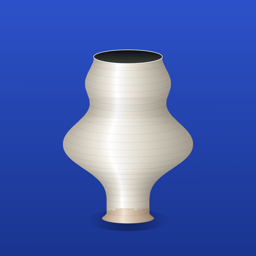

Thrown
The shape of your day.
Thrown is a step counter for iPhone. Each day you walk is thrown on a potter's wheel as a pot: morning at the foot, night at the lip, wide where you walked. Reach your goal and the pot is glazed.
Help
My pots are empty or my steps look wrong
Thrown reads steps from Apple Health, so steps from your Apple Watch count. Open Settings › Privacy & Security › Health › Thrown and allow Steps and Walking + Running Distance. Without Health access, Thrown uses the iPhone's motion data, which covers this iPhone only and the last 7 days.
Why is the count a little different from the Health app for a moment?
While Thrown is open it counts live from the iPhone's motion sensor, then settles on the Health total whenever Health updates. A day is fired with the Health numbers, and re-checked once a day later in case your Watch synced late.
What is bisque?
Days below your goal are fired as plain bisque, unglazed clay. They stay on the shelf like every other day. Nothing is lost.
I changed my goal. Why didn't old pots change?
Each pot keeps the goal that was set on its day. A new goal applies from today onward.
The widget isn't up to date
iOS lets widgets refresh a few times an hour, and Health data can't be read while the iPhone is locked. Opening Thrown updates the widget straight away.
I bought Thrown Studio but it isn't active
Open Thrown › Studio › Restore purchases while signed in to the same Apple Account you bought it with.
How do I cancel or get a refund?
Open Settings, tap your name, then Subscriptions. Refunds are handled by Apple at reportaproblem.apple.com.
Contact
Email alexandremanukyan1@gmail.com. I read every message.